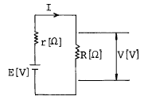
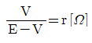
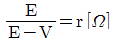
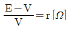
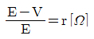

농기계정비기능사 (2003-01-26 기출문제)
1과목: 농기계정비
1. 실린더 헤드에 균열이 생기는 원인이 아닌 것은?
- 가스켓의 재질불량
- 냉각수 동결
- 기관 과열시 냉각수의 급보충
- 외부에 대한 헤드의 직접적인 충격
(정답률: 57%)

2. 공냉식 가솔린기관의 실린더 내가 카본으로 가득차 있다. 그 이유는?
- 윤활유의 희석이 많아서
- 윤활유의 희석이 적어서
- 회전을 낮게 사용해서
- 과부하가 되어서
(정답률: 69%)
3. 엔진을 처음 사용하는 경우 최초의 엔진오일 교환시간은 어느 정도인가?
- 20~30시간
- 35~50시간
- 55~80시간
- 85~100시간
(정답률: 45%)
4. 디젤기관의 노크 방지책 중 맞지 않는 것은?
- 연료의 발화점을 높게
- 압축비를 높게
- 회전속도를 느리게
- 부하를 크게
(정답률: 41%)
5. 어느 4기통 기관의 한 기통의 배기량이 500㏄이고 출력은 40㎰이다. 이 엔진의 리터당 마력은?
- 10 ㎰/ℓ
- 15 ㎰/ℓ
- 20 ㎰/ℓ
- 25 ㎰/ℓ
(정답률: 47%)
6. 농용 엔진에서 겨울철 추운지방에서는 호퍼에 붓는 물은 몇도 정도의 더운물을 쓰는 것이 좋은가?
- 20~30℃
- 35~40℃
- 50~60℃
- 70~80℃
(정답률: 69%)
7. 내연기관에서 기관 오일과 냉각수를 빼는 시기에 대한 설명이다. 맞는 것은?
- 엔진 오일 및 냉각수는 모두 기관이 작동되고 있을 때 뺀다.
- 엔진 오일은 기관이 차거워 졌을 때 빼고, 냉각수는 기관이 더워 졌을 때 뺀다.
- 엔진 오일 및 냉각수는 모두 기관이 차거워 졌을 때 뺀다.
- 엔진 오일 및 냉각수는 모두 기관이 식기 전에 빼야 한다.
(정답률: 62%)
8. 연료분사 펌프에 연료가 들어오지 않을 때 점검할 사항이 아닌 것은?
- 연료밸브(콕크)
- 노즐의 상태
- 연료휠터
- 연료의 양
(정답률: 53%)
9. 디젤 연료 분사 펌프에서 연료가 압송되지 않는 원인은?
- 연소실 패킹이 없거나 손상 되었을 때
- 플랜저가 마멸되었거나 동작이 불량할 때
- 실린더 라이너가 마멸되었을 때
- 흡기, 배기의 밸브 조정이 불량할 때
(정답률: 52%)
10. 다음 농기계 작업기중 물낀 땅갈이 및 쎄레 작업에 사용하는 것은?
- 양용쟁기
- 쎄레
- 물논바퀴
- 배토판
(정답률: 52%)
11. 다음 중 V벨트의 장점 중 틀린 것은?
- 미끄럼이 적다.
- 회전비를 적게 할 수 있다.
- 장력에 비하여 전동효율이 높다.
- 고속회전에 있어서도 소음이 작다.
(정답률: 40%)
12. 경운기 V벨트의 긴장도는 얼마정도가 가장 적당한가?
- 0~4㎜
- 5~10㎜
- 20~30㎜
- 45~50㎜
(정답률: 56%)
13. 트랙터의 기동전동기가 회전하지 않는다. 점검 사항이 아닌 것은?
- 밧테리의 충전상태 점검
- 밧테리 터미널의 볼트 점검
- 발전기 점검
- 기동스위치 점검
(정답률: 70%)
14. 시동 모터의 점검 사항을 기록한 것 중 알맞는 것은?
- “ +” 브러쉬 홀더와 “ -” 브러쉬 홀더 사이의 저항은 그 값이 적을 수록 좋다.
- 전기자 코일은 전기자 철심과 절연되어 있어야 한다.
- 휠드 코일은 기동모터 몸체와 접지 되어야 한다.
- 정류자 편과 정류자 코일은 서로 절연되어야 한다.
(정답률: 28%)
15. 다음 중 콤바인의 기능이 아닌 것은?
- 전처리 기능
- 예취 기능
- 탈곡 기능
- 도정 기능
(정답률: 85%)
16. 트랙터 엔진 오일에 냉각수가 섞여 있으면 오일의 색깔은?
- 우유색
- 푸른색
- 붉은색
- 검은색
(정답률: 69%)
17. 동력 분무기의 압력을 규정대로 조정한 후 분무하려하니 압력강하가 심하다. 정비사항이 아닌 것은?
- 여수량이 너무 적다.
- 여수량이 너무 많다.
- 노즐마모가 심하다.
- 호스가 가늘다.
(정답률: 39%)
18. 경운기 변속기 내부에서 고정보올이 장치되어 있는 축은?
- 주변속축
- 조향축
- 중간축
- 경운변속축
(정답률: 43%)
19. 콤바인 작업 중 곡물 이송부가 자주 막히고 선별이 나쁘다. 그 원인은?
- 엔진 회전이 규정보다 높다.
- 벨트가 미끄러진다.
- 작물이 너무 건조하다.
- 1번 선별 조절판을 너무 좁혀 사용하고 있다.
(정답률: 47%)
20. 승용트랙터의 팬벨트의 유격은 어느 정도가 되어야 적당한가?
- 손으로 눌러 벨트의 여유가 30-35㎜정도
- 손으로 눌러 벨트의 여유가 10-15㎜정도
- 손으로 눌러 벨트의 여유가 3-5㎜정도
- 손으로 눌러 벨트의 여유가 없어야 한다.
(정답률: 72%)
2과목: 농기계전기
21. 엔진의 회전속도가 균일하지 않은 것은 어느 부품의 고장인가?
- 점화코일
- 마그넷
- 기화기
- 조속기
(정답률: 72%)
22. 경운기 조향클러치 레버의 자유움직임은 얼마정도가 적당한가?
- 1∼2 ㎜
- 3∼4 ㎜
- 5∼6 ㎜
- 7∼8 ㎜
(정답률: 58%)
23. 디젤 기관에서 정상 부하 운전인데도 검은 연기의 배기가스가 발생된다. 그 원인이 아닌 것은?
- 공기 청정기 및 배기관이 막혔을 때
- 무리한 부하이고, 메탈이 탔을 때
- 연료의 노즐구멍이 막혔을 때
- 윤활유의 량이 너무 적을 때
(정답률: 58%)
24. 트랙터에 로타리를 장착하고 작업을 할때에 유니버샬 죠인트가 잘 빠져 나오지 않는 경우는 어느 것인가?
- 로우터리의 좌우로 수평 균형 조절이 잘 안되었다.
- 로우터리를 중앙에 위치하게 하고 체크체인을 당기어 조립하였다.
- 로우터리를 편중되게 장착시켰다.
- 유니버샬 죠인트의 키를 정확히 끼우지 않았다.
(정답률: 60%)
25. 펌프는 돌지만 물이 안 나올때의 원인이 아닌 것은?(단, 전동기 부착 펌프임)
- 임펠러에 오물이 끼어 있음
- 스트레이너가 물 위에 떠 있음
- 흡입 계통에서 공기가 새어 듬
- 푸트 밸브가 샘
(정답률: 37%)
26. 보통형 콤바인의 릴이 하는 역할을 바르게 말한 것은?
- 회전하면서 작물의 이삭부분을 자른다.
- 짚과 북더기를 재처리 한다.
- 예취된 작물을 기계 중앙으로 모아 준다.
- 예취할 작물을 가지런히 정리해 준다.
(정답률: 57%)
27. 분사펌프의 분사량 조정에 대한 설명 중 맞는 것은?
- 제어래크와 제어피니언의 물림을 바꾼다.
- 딜리버리 밸브스프링을 약한 것으로 바꾼다.
- 제어슬리이브와 제어피니언의 관계 위치를 변경한다.
- 분사시기 조정쉼을 빼어낸다.
(정답률: 44%)
28. 기동전동기 전기자의 개회로는 보통 어느 곳에서 일어나는가?
- 코일 밴드
- 코일 연결부분
- 브러시선 연결부분
- 정류자
(정답률: 64%)
29. 10마력의 디젤경운기의 매시간 연료소비량이 2.2kg이고 연료 1kg의 발열량이 11,000kcal이면 이때의 열효율은? (단, 1마력의 1시간당 일량은 632.3kcal/ps이다.)
- 23.1 %
- 26.1 %
- 29.1 %
- 31.1 %
(정답률: 39%)
30. 동력경운기의 로터리에 흙과 폐비닐이 부착되었을 때 적절한 조치법으로 적당한 것은?
- 엑셀레이터를 저속으로 한다.
- 토치램프로 연소 시킨다.
- 후진으로 경운 한다.
- 엔진을 정지 후 제거한다.
(정답률: 93%)
31. 6[Ω]과 3[Ω]의 저항을 직렬로 접속할 경우는 병렬로 접속할 경우의 몇배의 저항이 되는가?
- 2
- 4.5
- 6.5
- 9
(정답률: 29%)
32. 농용 트랙터에 탑재 되있는 축전지를 떼어낼 때 준수해야할 사항은?
- 양 케이블을 함께 푼다.
- 접지 터미널을 먼저 푼다.
- 절연되어 있는 케이블(+케이블)을 먼저 푼다.
- 벤트 플러그를 열고 떼어낸다.
(정답률: 49%)
33. 농업용 트랙터 축전지의 충전을 위하여 가장 널리 사용하는 발전기는?
- 직류 분권 발전기
- 직류 직권 발전기
- 직류 복권 발전기
- 3상 교류 발전기
(정답률: 46%)
34. 점화코일은 점화플러그에 불꽃 방전을 일으킬 수 있는 높은 전압의 전류를 발생시키는 것으로서 무슨 원리로 응용한 것인가?
- 자기유도작용과 상호유도작용
- 자력선의 변화작용
- 전류의 완성작용
- 전자력의 발생작용
(정답률: 81%)
35. 점화 플러그 시험에 들지 않는 것은?
- 용량시험
- 기밀시험
- 불꽃시험
- 절연시험
(정답률: 72%)
36. 1차 회로의 단속시 단속기 접점에 불꽃이 생기는 것을 방지하고 2차 코일에 높은 전압을 공급하는 부품은?
- 점등코일
- 점화코일
- 축전기
- 플라이휘일
(정답률: 46%)
37. 점화플러그의 점검시 점화플러그를 살펴보니 엷은 황색을 띄고 있다. 수리할 때의 유의할 사항은?
- 과열의 상태이므로 열값이 높은 플러그를 사용하여야 한다.
- 과열의 상태이므로 접점 간극을 넓혀야 한다.
- 저열의 상태이므로 열값이 낮은 플러그를 사용하여야 한다.
- 열값은 관계없으나 인가전압이 낮으므로 배전기를 조정 수리한다.
(정답률: 67%)
38. 교류 발전기에서 발생된 교류전류를 직류전류로 정류하는 데 사용되는 것은?
- 실리콘 다이오드
- 계자 릴레이
- 슬립링
- 전류 조정기
(정답률: 60%)
39. 발전기가 정지되어 있으나 발생전압이 낮을 때 축전지에서 발전기로 전류가 역류하는 것을 막는 것은?
- 전압 조정기
- 전류 조정기
- 컷 아웃 릴레이
- 계자 코일
(정답률: 69%)
40. 그림과 같이 접속된 회로에서 저항 R의 값을 E.V.r로 나타내면 어떤 관계식이 성립되는가?





(정답률: 24%)
3과목: 농기계안전관리
41. 어떤 회로에 100[V]의 전압을 가했더니 10[A]의 전류가 흘렀다. 이 회로의 저항은?
- 0.1[Ω]
- 1[Ω]
- 10[Ω]
- 100[Ω]
(정답률: 85%)
42. 트랙터의 베터리 전압이 24[V]가 필요할때 6[V] 네개의 베터리 연결 방법은?
- 직렬연결
- 병렬연결
- 직.병렬연결
- 좌.우병렬연결
(정답률: 60%)
43. 트랙터를 시동하려고 키 스위치를 돌렸는데 아무런 소리도 나지 않고 시동이 전혀 되지 않는다. 우선 먼저 점검해야 할 사항은?
- 축전지 방전 상태 및 외부 접속선을 점검한다.
- 계자 코일 및 전자 스위치를 점검한다.
- 정류자 및 전기자 소손 상태를 점검한다.
- 테스터기로 전기자의 단락, 단선, 접지 시험을 한다.
(정답률: 72%)
44. 전압계와 전류계에 대한 설명이다. 다음 중 옳지 않은 것은?
- 직류를 측정할때는 (+), (-)의 극성에 주의한다.
- 전압계는 저항부하에 대하여 병렬 접속한다.
- 전류계는 저항부하에 대하여 직렬 접속한다.
- 전압계와 전류계 모두 저항부하에 대하여 직렬 접속 한다.
(정답률: 75%)
45. 다음 중 플레밍의 왼손 법칙에서 도체가 받는 힘의 방향을 결정하기 위해서 필요한 것은?
- 자계, 전류의 방향
- 전류, 전압의 방향
- 자계, 전압의 방향
- 전압, 권선 방향
(정답률: 44%)
46. 트랙터 작업에 종사할 수 없는 사람은?
- 18세 미만자
- 시력이 0.8이하인자
- 위장병이 있는사람
- 술을 마신 사람
(정답률: 84%)
47. 압축공기로 방열기를 청소할 때 주의사항 중 옳은 것은?
- 엔진쪽에서 불어낸다.
- 엔진쪽으로 불어낸다.
- 워터재킷쪽으로 불어낸다.
- 냉각팬 쪽으로 불어낸다.
(정답률: 67%)
48. 유류화재의 소화에 쓰이는 것은?
- 펌프소화기
- 분말소화기
- 산화알칼리
- 사염화 탄소
(정답률: 81%)
49. 유류저장에 적당한 소화용 재료는?
- 물
- 모래
- 석회
- 시멘트
(정답률: 87%)
50. 농업기계 공구 사용시 주의사항으로 틀린 것은?
- 항상 갈고 손질하여 사용할 것
- 맞는 연장을 사용할 것
- 뾰족한 연장을 포켓에 넣지 말것
- 자를 때는 방향을 생각하지 않고 작업을 할 것
(정답률: 90%)
51. 다음 중 사고의 종류가 아닌 것은?
- 전도현상
- 추락현상
- 충돌현상
- 전파현상
(정답률: 82%)
52. 조명에 필요한 조건에 해당되지 않는 것은?
- 광원이 흔들리지 않을 것
- 대부분 작업대의 밝기보다 주위의 밝기를 더 밝게할 것
- 작업대와 그 바닥에 그림자가 없을 것
- 보통 상태에서 눈이 부시지 않을 것
(정답률: 80%)
53. 농업기계 정비실에서 작업도중 정전되었을 때 다음 중 꼭 하여야 할 일은?
- 클립 등을 제거하여 작업의 능률을 향상 시킨다.
- 전원 스위치를 끈다.
- 부품을 정리정돈 한다.
- 작업을 정비하고 휴식을 취한다.
(정답률: 96%)
54. 트랙터 운전중 안전사항에 대한 설명으로 알맞지 않는 것은?
- 트랙터에는 운전자, 보조자 등 2명만 탑승해야 한다.
- 트랙터는 짧은 시간에 전복하므로 항상 안전속도를 지켜야 한다.
- 트레일러에 큰 하중을 싣고 운행할 때 급정거를 해선 안된다.
- 회전시나 브레이크 사용시에는 반드시 속도를 줄여야 한다.
(정답률: 93%)
55. 연속 작업시의 유의점이다. 옳지 않은 것은?
- 동작의 수는 가능한한 적게 한다.
- 동작의 순서는 바르게 하며 동작마다에 알맞는 리듬을 준다.
- 긴장을 어느 한곳에만 집중적으로 모으고 작업을 한다.
- 손, 발은 유효한 범위내에서만 움직인다.
(정답률: 76%)
56. 방독 마스크를 사용할 수 없는 조건은?
- 산소의 농도가 16% 이하인 장소
- 산소의 농도가 18% 이상인 장소
- 산소의 농도가 20% 이상인 장소
- 산소의 농도가 21% 이상인 장소
(정답률: 80%)
57. 안전에 관계되는 위험한 장소나 위험물 안전표지 등에 사용되는 색깔은 어느 것인가?
- 빨간색
- 주황색
- 노란색
- 흰색
(정답률: 21%)
58. 안전모의 두께와 무게로 알맞는 것은?
- 두께는 2mm이상, 무게는 320g정도
- 두께는 4mm이상, 무게는 360g정도
- 두께는 8mm이상, 무게는 400g정도
- 두께는 10mm이상, 무게는 440g정도
(정답률: 32%)
59. 스패너 작업 중 가장 옳은 것은?
- 스패너 자루에 파이프 등을 끼워서 사용한다.
- 가동조에 가장 큰 힘이 걸리도록 한다.
- 고정조에 힘이 걸리도록 한다.
- 볼트머리보다 약간 큰 스패너를 사용하도록 한다.
(정답률: 67%)
60. 다음은 밀링 작업에 대한 설명이다. 안전사항에 위배된 것은?
- 밀링 작업 중에는 보호 안경을 착용해야 한다.
- 상하좌우의 이송장치의 핸들을 사용 후 완전히 조여준다.
- 회전하는 커터에 손을 대지 않는다.
- 절삭유 노즐이 커터에 부딪치지 않도록 한다.
(정답률: 74%)